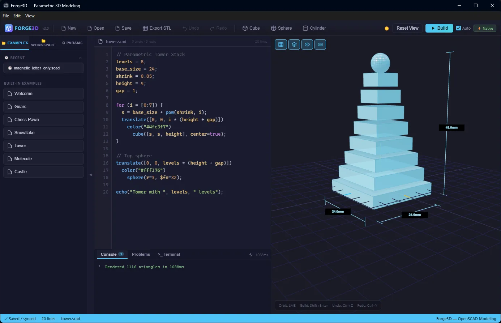
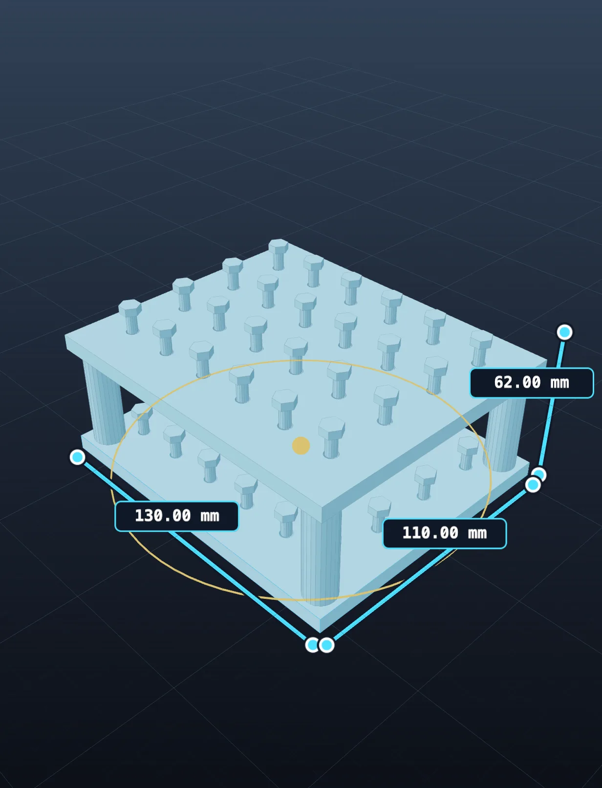
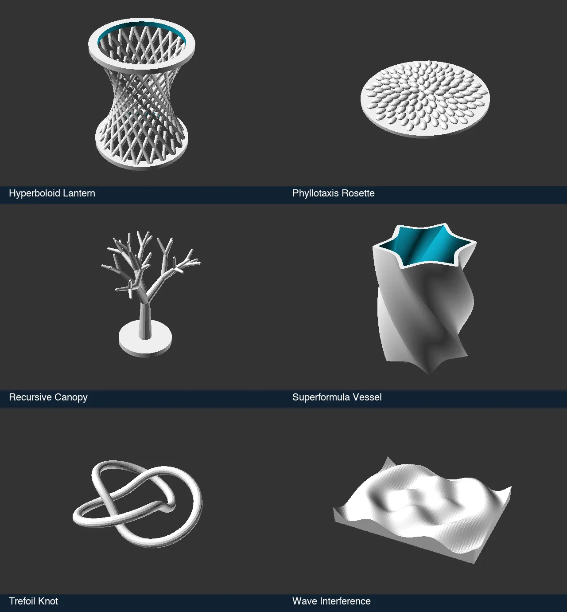

v3.2.0 prerelease · MIT licensed
A desktop IDE for OpenSCAD.
Write parametric code, render it with the OpenSCAD installed on your machine, check its dimensions in a 3D viewport, and export STL for your slicer.

What it does
Native OpenSCAD
Runs your installed OpenSCAD binary, so every font, include and library you already use works.
Live build
Auto Render re-renders 400 ms after you stop typing. Turn it off any time.
Dimension brackets
CAD-style width, depth and height overlays on every render.
Parameters
Controls generated from top-level variables and
// @paramannotations, with jump-to-source.Three.js viewport
Orbit, pan and zoom, with grid, axes, edge overlay and surface measurement.
STL export
One click to export the rendered geometry for your slicer.
Local MCP modeling tools
An optional companion exposes 15 provider-neutral MCP tools for design, multi-part assembly, print-bed layout, STL export and real viewport capture. It runs locally and needs no provider account.
This 54-part assembly was built from three OpenSCAD sources and captured through the packaged Mac tools.

Math Lab
Six original, editable studies in knots, recursion, wave interference, polar curves, phyllotaxis and ruled surfaces. Open one, change a number, and watch it rebuild.

Install
- Install OpenSCAD. On Apple Silicon, the snapshot build is preferred:
brew install --cask openscad@snapshot - Download the v3.2.0 Apple Silicon DMG.
- Drag Forge3D to Applications and approve it once with Open Anyway. See the Mac install guide.
The Mac build is an ad-hoc-signed development preview without Apple Developer ID or notarization, so macOS asks for approval and managed Macs may block it. Windows and Linux users can build from source with Node.js 22 and npm 10.